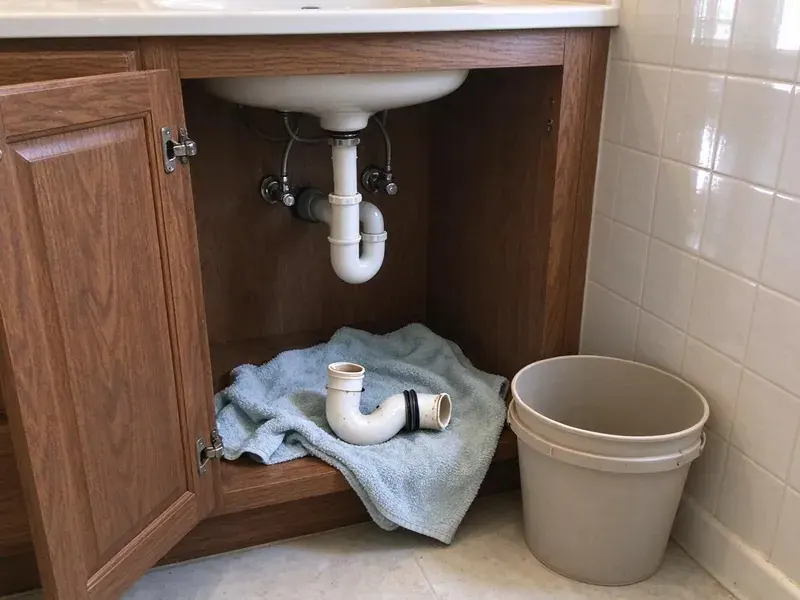

Copper Pipe Leak Repair in Lakewood, OH
Green stains, a damp wall or a hiss behind the drywall? HRL Plumbing fixes copper pipe leaks in Lakewood, OH.
- Thermal Imaging
- Nearby Pipe Checked
- Pressure Tested Every Time
- Soldered and ProPress Repairs

Get the Copper Leak Repaired in Lakewood, OH
We locate the leak, repair it cleanly and tell you straight whether more pinholes are likely.
Copper Pipe Leak Repair in Lakewood, OH for Pinholes and Failed Joints
HRL Plumbing repairs leaking copper water lines in Lakewood, OH, from a pinhole in thin Type M pipe to a solder joint that finally let go. Locating comes first. A thermal camera shows where hot or cold water is spreading inside a wall, which keeps the patch small and in the right spot. Then we pressure test.
Our expertise includes:
- Section replacement for badly pitted copper
- Pinhole, corrosion and burst pipe repair
- Code-compliant repiping in Type L copper

Additional Plumbing Repair Services in Lakewood, OH
We offer expert plumbing repair services across Lakewood, OH to stop leaks, clear blockages, and keep every fixture working the way it should.


Customers
Why Choose HRL Plumbing for Copper Pipe Leak Repair in Lakewood, OH?
A copper pinhole can soak insulation and drywall for weeks before a stain shows. Mold follows. We find leaks with thermal cameras and moisture meters, then open only the section of wall the repair needs so the patch afterward is small. That saves on drywall.
- Honest Advice, We tell you when repeated pinholes make patching a poor spend.
- Cause Checked, Pressure, grounding and bonding are part of every visit.
- Fire Safety, Heat shields, wet rags and an extinguisher whenever a torch comes out.
Citywide Coverage
Landlords and property managers across Lakewood call us for repeat pinholes at the same units. Aging Type M is common. We find the cause, fix it, and record what we found so future visits go faster.
Experienced Team
Every plumber on our team is licensed and trained on soldering, brazing and ProPress tools. That range matters. Press fittings let them repair copper next to wood framing or insulation without an open flame, so the method fits the location instead of the other way around.
Safety-First Approach
Soldering means an open flame inside your walls. Fire risk is real. Our plumbers use heat shields and wet rags and keep a fire extinguisher at the work spot, then look over the framing and insulation once more before we leave.
Trusted Certified Lakewood Plumbing Services Professionals
At HRL Plumbing, we are proud to offer certified plumbing services throughout Lakewood, OH. Credentials matter in this trade. Every repair, install and maintenance visit follows strict safety and quality rules, and the plumbers doing the work carry recognized industry credentials.
Call Us Now PHCC Plumbing Contractor Recognition
PHCC Plumbing Contractor Recognition Better Business Bureau (BBB) Accreditation
Better Business Bureau (BBB) Accreditation Angi Certified Pro
Angi Certified Pro ISO 9001 Quality Management Certification
ISO 9001 Quality Management CertificationPinholes, Joints and Fittings, Repaired in Lakewood, OH
Commercial Copper Pipe Leak Repair in Lakewood
Commercial buildings often run larger diameter copper for domestic water. Water-off time hurts. We repair copper supply lines in offices, restaurants and apartment buildings, using press tools on large lines to shorten the shutdown and skip the torch. We schedule around business hours.

Pinhole Leak Repair in Lakewood
Pinholes start inside the pipe where the copper wall pits and thins. You see a drip or a stain. They are small and easy to miss behind drywall, so we locate them with a thermal camera and moisture meter before cutting a single opening in the wall or ceiling. We replace the pitted length with Type L. Nearby pipe gets checked.
Copper Pinhole Leak Repair in Lakewood
Pinholes form when the inner wall of copper pipe erodes or pits. Hot lines get it worst. They often appear in thin Type M pipe and on hot water lines where velocity and temperature are higher, which we fix by replacing that length with heavier pipe. More pinholes often follow.
Copper Repair vs Repipe Cost in Lakewood, OH
A single copper leak repair is affordable and fast. Repeated leaks change the math. If you have had two or more pinhole leaks in a year, the copper is likely thinning throughout the system, so repiping often beats another round of spot fixes on total cost. We price both.
Commercial Copper Pipe Repair in Lakewood
Many commercial buildings use larger diameter copper for domestic water supply. Leaks affect more than one unit. Leaks in these systems require careful shutdown planning, so we repair commercial copper lines with press fittings to reduce downtime and avoid open flame near occupied spaces. Isolation valves get added if missing.
Commercial Copper Pipe Leak Services in Lakewood, OH
In a commercial building, one copper leak can affect several tenants at once. Planning matters. We isolate the smallest zone possible and repair the leak with press fittings or solder, working before opening or after close when the building has to stay running. Records are available for managers.
Slab Leak Detection and Repair in Lakewood
Copper often runs under concrete slabs in Lakewood homes. Ground movement pulls on it. Tree roots and shifting clay often crack older clay or cast iron sewer laterals, leading to slow drains and backups. We use acoustic and thermal equipment to find the leak without breaking concrete to search, and the repair is either a small cut at the leak or a reroute through the walls that leaves the old line in the slab. Each gets a quote.

Hot Water Copper Line Repair in Lakewood, OH
Hot water lines corrode faster than cold lines. Heat speeds it up. Recirculation pumps that run around the clock push water through the copper at high velocity and wear it from the inside, so we repair leaking hot lines and can add a timer or adjust the pump to cut down on wear. Less run time, less wear.
Local Copper Leak Repair in Lakewood, OH
You want a plumber who shows up on time and fixes the leak without a week of back and forth. That is how we run copper calls. One plumber finds it, the same plumber repairs it, and you get a price on paper before any work begins.
A copper leak in Lakewood gets worse every hour. Delay costs more. We book copper repairs across the Lakewood area, quote it on paper and test the line when the work is done.
HRL Plumbing at a Glance
- Licensed and insured plumbers serving Lakewood, OH
- Same-day appointments and 24/7 emergency response
- Upfront, flat-rate pricing before work begins
- 4.9-star rated by 673+ Ohio customers
Lakewood Map
Lakewood Information
- Population
- 49,337
- Area codes
- 216/440/330
- Service area
- Lakewood and communities within 40 miles
- Nearby
- Cleveland, Parma, Euclid, Elyria
Copper in Lakewood, OH homes pits slowly where water chemistry and velocity wear it down, and pinholes are the result. Homeowners around Lakewood often install a softener to protect water heaters and cut down on spotting on fixtures.
Expert Services
Reach out to HRL Plumbing for honest, reliable plumbing from people who know the trade in Lakewood, OH.
Our Specialized Plumbing Services in Lakewood, OH
At HRL Plumbing, we handle the full list of plumbing services across Lakewood, OH. We go from leak detection all the way to full system installations, for homes and commercial buildings, and we do it quickly at a fair price. Here are the core services we offer:


How a Copper Leak Repair Goes in Lakewood, OH
No copper gets cut until you have approved the quote.
Tell Us What You See
Call (740) 449-7505 and describe the water, stains or dripping. We will get someone out quickly.
Pinpoint the Leak
We locate the leak with thermal imaging and moisture meters before cutting anything. Then you get a price.
Repair and Inspect
We replace the damaged copper and pressure test the line. Surrounding copper gets a look.
Frequently Asked Questions About Copper Pipe Leak Repair in Lakewood
A simple solder repair usually runs $200 to $500. Access adds cost. A slab leak that needs specialized detection and repair could range from $800 to $3,000 or more, with reroutes at the top of that range. We price it once we know the cause.
If you have had repeated leaks, it is worth pricing. PEX does not pinhole. PEX resists the corrosion and scale that cause copper pinholes and goes in quickly with fewer wall openings, so a PEX repipe often beats years of patching. You get both numbers.
An accessible pinhole or a single joint takes one to four hours. Hidden leaks add time. Leaks under a slab or a repipe can take a full day or more, with access and rerouting as the main things that stretch it out. We give you a timeline with the price.
A small isolated repair usually does not need one. Bigger jobs might. Replacing a large section, rerouting lines or working on the main water supply in Lakewood may require a plumbing permit, which allows an inspection before anything is covered. The permit is on us.
A visible pinhole or a small section is usually done in two to four hours. Slab work takes longer. Slab leaks or a repipe can take a full day or more, with the method and access setting the pace. You get a timeline first.
Keep water pressure under about 80 psi. A regulator helps. Treating hard or aggressive water, insulating pipe in cold spots and limiting how long a recirculation pump runs all reduce the wear that leads to pinholes and failed joints. Know where your main shutoff is.
Minor repairs typically do not. Larger work often does. Significant repiping, relocating lines or work on the main water service in Lakewood may need a plumbing permit, depending on local rules and how much of the system is being changed. We handle the filing.
Insurance often covers sudden water damage. Worn pipe is usually excluded. The cost of repairing old or corroded copper is usually yours, but the resulting damage to the house may be claimable. Ask your insurer. We provide documentation.
What Our Customers Say About Our Plumbing Experts

Rachel N.
Hard water was leaving white crust on every faucet and our dishwasher was struggling. The tech tested the water, recommended a softener sized for a family of five, and installed it with a bypass valve in one afternoon. The spots on our glasses are gone.
Water Softener · Parma, OH
James P.
Our restaurant had a slow leak at the hand sink that was rotting the cabinet base. HRL Plumbing came in at six in the morning before prep, replaced the trap and both supply lines, and was packed up before my first cook clocked in.
Commercial Plumbing · Cleveland, OHLisa C.
Water was pouring out from under the washing machine on a holiday weekend. HRL Plumbing talked me through closing the valves over the phone and had a plumber at the house within ninety minutes. It was a burst fill hose.
Emergency Plumbing · Parma, OH
Tyler J.
We bought a taller comfort height toilet for my dad, who just had knee surgery. The plumber pulled the old one, found the flange was cracked, and replaced it before setting the new bowl. Took about two hours.
Toilet Installation · Lakewood, OH
Jessica T.
We were adding a gas range in a kitchen remodel and needed a new line run from the meter. The plumber pulled the permit, ran the pipe through the crawl space, and had it inspected and approved within the week.
Gas Line Repair · Cuyahoga Falls, OHMonica A.
Our water bill nearly doubled in one month with no change in how we used water. The tech checked the meter, heard the leak under the hallway with his equipment, and opened a hole about a foot square. Fixed the same day.
Slab Leak Repair · Cuyahoga Falls, OH